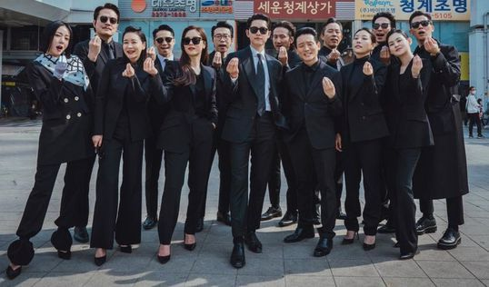

Es una serie de televisión surcoreana emitida del 20 de febrero de 2021 hasta el 2 de mayo de 2021 a través de tvN y Netflix.

Sinopsis:
A la edad de 8 años, Park Joo Hyung fue a Italia después de ser adoptado. Ahora es adulto
y se llama Vincenzo Cassano, es abogado y trabaja para la mafia como consejero. Debido a
una guerra entre grupos de la mafia, huye a Corea del Sur. Cuando llega a Corea del Sur, se
involucra con la abogada Hong Cha Young. Ella es el tipo de abogada que hará cualquier cosa
para ganar un caso. Vincenzo Cassano se enamora de ella y también logra la justicia social a su manera.
Curiosidades
La primera lectura de guion tuvo lugar el 9 de agosto de 2020.
En el capítulo 8, Vincenzo usa el nombre "Tae Ho" para cubrir su identidad, éste es el nombre de su
personaje en Space Sweepers.
Im Chul Soo y Yang Kyung Won ya habían trabajado juntos anteriormente en el drama Crash Landing on You.
Yang Kyung Won y Song Joong Ki ya habían trabajado juntos en el drama Arthdal Chronicles.
Taecyeon y Jun Yeo Bin trabajaron juntos anteriormente en el drama Save Me
Es la tercera vez que Kwak Dong Yeon y Kim Yeo Jin trabajan juntos, la primera vez fue en el drama
Love in the Moonlight y la segunda fue en el drama My strange Hero.
Producion:
La serie fue creada por Studio Dragon.Contó con la directora Kim Hee-won, quien tuvo el apoyo del guionista Park Jae-bum.
Mientras que la producción ejecutiva estubo a cargo de Lee Jang-soo y Jang Sae-jung.
La primera lectura del guion fue realizada el 9 de agosto de 2020 en Sangam, Seúl, Corea del Sur.La serie
también contó con el apoyo de la compañía de producción "Logos Film" y fue emitida a través de la tvN.La conferencia
de prensa fue realizada en línea el 15 de febrero de 2021 donde asistieron los actores Song Joong-ki,
Jeon Yeo-been y Ok Taecyeon y la directora Kim Hee-won

Rating:
>
| Episodio |
Fecha de emisión |
Participación promedio de audiencia |
|
|
Nacional |
| 1 |
20 de febrero de 2021 |
7.659% |
| 2 |
21 de febrero de 2021 |
9.295% |
| 3 |
27 de febrero de 2021 |
8.121% |
| 4 |
28 de febrero de 2021 |
10.215% |
| 5 |
6 de marzo de 2021 |
9.674% |
| 6 |
7 de marzo de 2021 |
11.082% |
| 7 |
13 de marzo de 2021 |
9.241% |
| 8 |
14 de marzo de 2021 |
10.380% |
| 9 |
20 de marzo de 2021 |
9.057% |
| 10 |
21 de marzo de 2021 |
11.375% |

Elenco:
Song Joong Ki como Vincenzo Cassano / Park Joo Hyung
Kim Si Woo como Vincenzo Cassano (niño)
Jun Yeo Bin como Hong Cha Young
Taecyeon como Jang Jun Woo
Kim Yeo Jin como Choi Myung Hee
Kwak Dong Yeon como Jang Han Seo
Firma legal Wusang:
Jo Han Chul como Han Seung Hyuk
Yang Seung Won como abogado
Fiscalía del Distrito Sureste:
Seo Jin Won como Hwang Jin Tae
Hwang Tae Gwang como Seo Woong Ho
Go Sang Ho como Jung In Kuk
Grupo Babel:
Na Chul como Na Deok Jin
Kim Jin Bok como investigador Yu Min Chul
Geumga Plaza:
Yoo Jae Myung como Hong Yoo Chan
Yoon Byung Hee como Nam Joo Sung
Choi Young Joon como Jo Young Woon
Choi Duk Moon como Tak Hong Sik
Yang Kyung Won como Lee Cheol Wook
Seo Ye Hwa como Jang Yeon Jin
Kim Yoon Hye como Seo Mi Ri
Lee Hang Na como Kwak Hee Soo
Kang Chae Min como Kim Young Ho
Kwon Seung Woo como Monje Chae Shin
Ri Woo Jin como Monje Jeok Ha
Kim Hyung Mook como Jefe Toto
Kim Sul Jin como Larry Kang